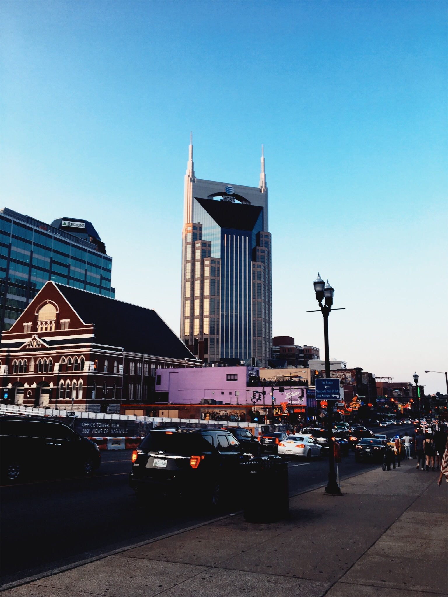

Choosing where to go on vacation can be a challenge, especially for those wanting a lively and exciting new city to explore. My name is Olivia and I want to influence you to choose Nashville for your new vacation destination. There are a multitude of fun activities to do, trendy things to see, and historic places to visit in Tennessee's capitol. Below you'll find a link that lets you explore Nashville, but I will also offer my own personal favorite local spots to ease your traveling fears!
Here are some of my personal favorite...
Famous Nashville Locals |
|
|---|---|
| Taylor Swift | Keith Urban |
| Reese Witherspoon | Justin Timberlake |